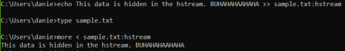

Alternate Data Streams
Alternate Data Streams Alternate Data Stream are a feature of Windows OSs for NTFS file system(not available on FAT).
ADS is the ability to fork file data into more files(streams) without affecting their functionality, size, or display to traditional file browsing utilities like dir or Windows Explorer.
ADS capabilities where originally conceived to allow for compatibility with the Macintosh Hierarchical File System, HFS; where file information is sometimes forked into separate resources.
example 1:  example 2: type c:\anyfile.exe > c:\winnt\system32\calc.exe:anyfile.exe
this will fork the common windows calculator program with an ADS "anyfile.exe." When launched, the ADS executable will appear to run as the original file, looking undetectable to process viewers like Windows Task Manager. Using this method, it is not only possible to hide a file, but to also hide the execution of an illegitimate process.
Bibliography:
1. Crimeware: Understanding New Attacks and Defenses
2. Windows Driver Development Kit
3. Rootkit subverting the Windows Kernel by Greg Hoglund